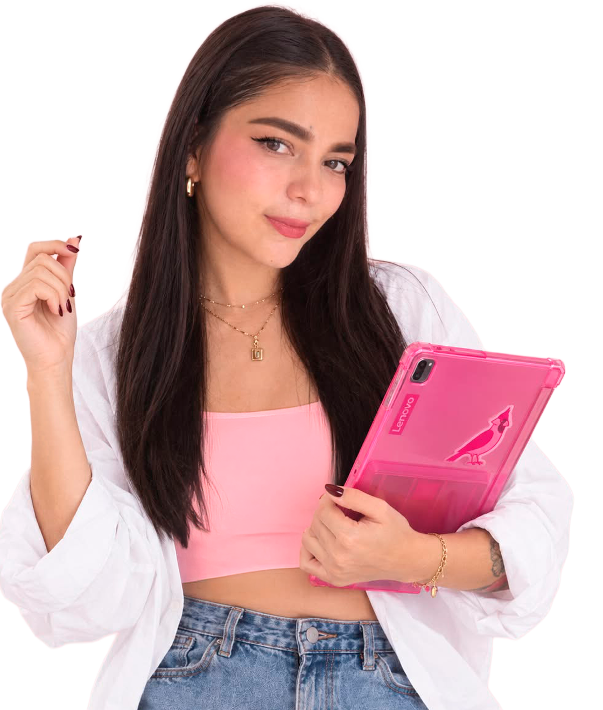

01
Espacios & Experiencias
Stands · Visual Merchandising · 3D · Planimetría · Experiencias
Ver proyectosDiseñadora Industrial · Especialista en Ecommerce y marketing digital
Diseño experiencias físicas y digitales conectando diseño, tecnología y estrategia.

Ecommerce Diseño industrialSoy Luisa Fernanda Pérez Selada, diseñadora industrial especialista en ecommerce. Diseño experiencias físicas y digitales conectando diseño, tecnología y estrategia.
Mi trabajo va desde espacios, stands y visual merchandising hasta productos digitales, marca, contenido y crecimiento, siempre pensando en cómo las personas viven y compran.
CVStands · Visual Merchandising · 3D · Planimetría · Experiencias
Ver proyectosWeb · Apps · UX/UI · Figma · Prototipos · User Flows
Ver proyectosBranding · Campañas · Social Media · Video · Motion · Presentaciones
Ver proyectosEcommerce · Estrategia · Campañas · Analítica
Ver proyectos